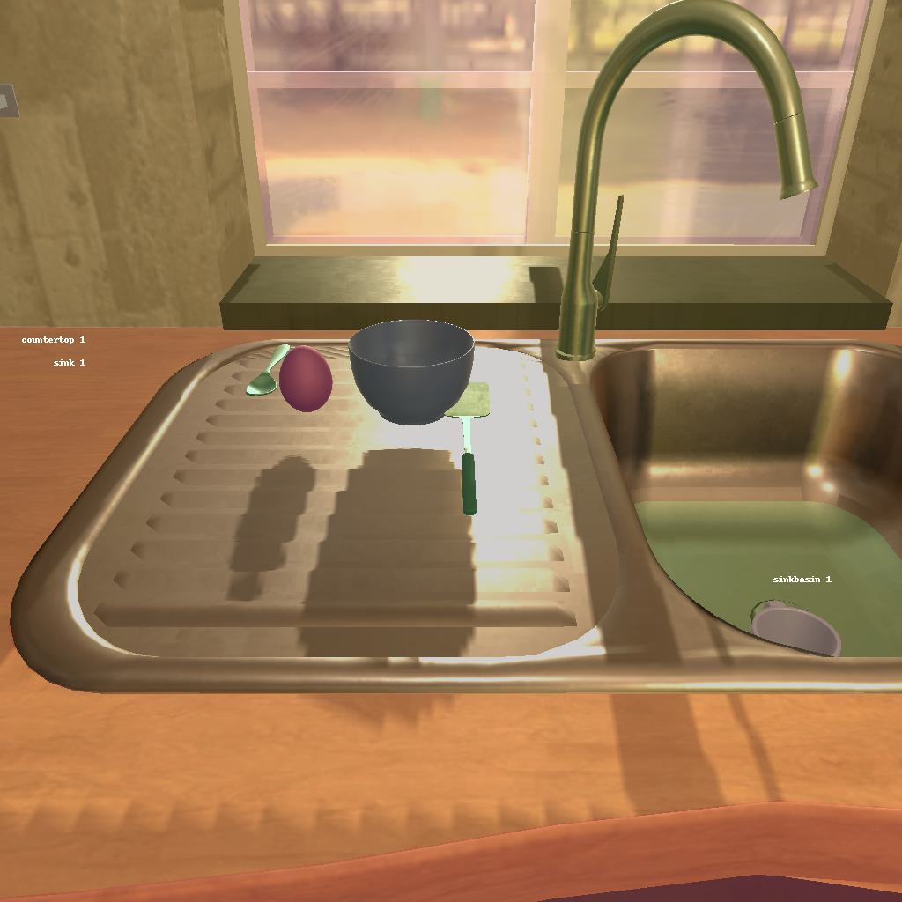
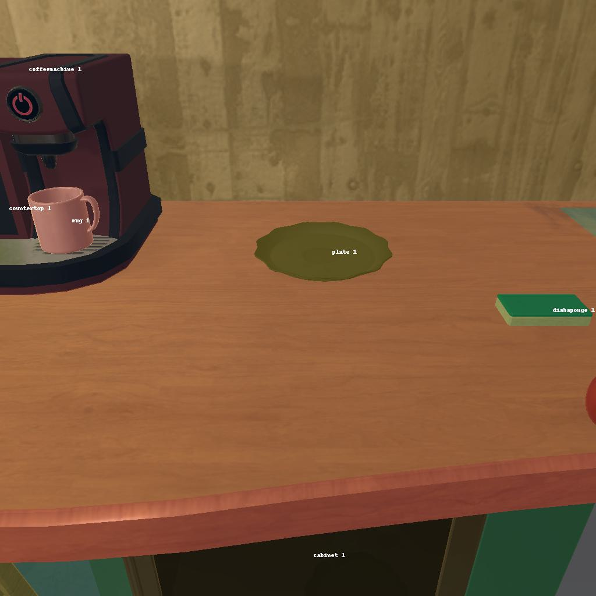

---------------------------------------------------------task: 26---------------------------------------------------------
--------------------------------------------------------------------------------------------------------------------------------------------------------------------
--------------------------------------------------------------------------------------------------------------------------------------------------------------------
Step:--------------------------------------------------------------------------1-------------------------------------------------------------------------------
----------------------------------------
VLM Prompt:
Image1:
Image2:
**Instruction**
1. Analyze the provided image to identify all visible household objects, focusing on those relevant to the task description "find two kettle and put them in cabinet."
2. Use the analysis of the image and the task hint "The agent must find an object of the desired type, pick it up, find the correct location to place it, put it down there, then look for another object of the desired type, pick it up, return to previous location, and put it down there with the other object." to answer the question: what is the most reasonable action in the choices for the task description "find two kettle and put them in cabinet"?
4. Decide and write the answer using the template: The answer is: (i): , where i is the real number. If there is no desired object in the image, search every place based on **Initial Observation** to find the object. And if no one is exactly correct, choose a similar answer.
**Initial Observation**
You are in the middle of a room. Looking quickly around you, you can see countertop (1), coffeemachine (1), cabinet (1-4), drawer (1-8), sink (1), sinkbasin (1), garbagecan (1), fridge (1), microwave (1), dresser (1), sidetable (1)
**Answer Choices**
(1): go to countertop 1
(2): go to coffeemachine 1
(3): go to cabinet 2
(4): go to drawer 1
(5): go to sink 1
(6): go to sinkbasin 1
(7): go to cabinet 3
(8): go to garbagecan 1
(9): go to cabinet 4
(10): go to drawer 2
(11): go to fridge 1
(12): go to microwave 1
(13): go to dresser 1
(14): go to sidetable 1
(15): go to drawer 3
(16): go to drawer 4
(17): go to drawer 5
(18): go to drawer 6
(19): go to drawer 7
(20): go to drawer 8
(21): open cabinet 1
(22): close cabinet 1
(23): examine cabinet 1
**Answer**
Let's think step by step by following the instructions.
----------------------------------------
----------------------------------------
Original Response:
First, we need to identify if there are any kettles visible in the provided images. Analyzing both images, we do not see any kettles on the countertops, near the sink, or around the coffee machine. Since the task is to find two kettles and put them in a cabinet, the next reasonable action would be to search in places where kettles could be stored when not in use, which is typically in cabinets or drawers.
Based on the initial observation, we know there are multiple cabinets and drawers in the room. Since the images do not show any kettles, we should start by searching the cabinets and drawers. The answer choices provide options to go to different cabinets and drawers, but we should start with the one closest to us, which is cabinet 1. Therefore, the most reasonable action in the choices for the task description "find two kettle and put them in cabinet" would be to open the nearest cabinet to begin the search.
The answer is: (21): open cabinet 1.
----------------------------------------
----------------------------------------
>>> Refine Original VLM Response and Get Pure Action: open cabinet 1
----------------------------------------
-----------------------------------------------------------------
Running time: 10.737448453903198 seconds
Total Money: 12.810180000000004
-----------------------------------------------------------------
-----------------------------------------------------------------
Text Observation:You open the cabinet 1. The cabinet 1 is open. In it, you see a plate 1, a mug 1, a plate 2, a dishsponge 1, and a tomato 1.
-----------------------------------------------------------------
UNSUCCEED